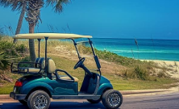

On the Sand
Isle of Palms Bachelorette Beach Day: Rules, Parking and Setup
The beach day is the easiest part of the trip to plan and the easiest to get fined on. Know the island rules before you load the wagon.
The beach day is the easiest part of the trip to plan and the easiest to get fined on. Know the island rules before you load the wagon.
Isle of Palms has about seven miles of wide, flat beach, which is a big reason groups choose it over busier Charleston-area beaches. It is also one of the stricter beach towns on the coast, and police patrol heavily on summer weekends. A little planning keeps the day relaxed and the group out of trouble.
This catches more bachelorette groups than anything else. The City of Isle of Palms beach rules prohibit alcoholic beverages and glass bottles on the beach, and the same goes for Folly Beach and Sullivan's Island. Fines for alcohol possession are steep and enforced per person. Smoking and vaping are also banned on the beach and access paths, as are fireworks, open fires and balloons. Keep the cocktails at the rental pool and bring sparkling water, mocktails in cans and snacks to the sand.
A few other rules matter for groups: use the marked public access paths rather than cutting through dunes, take every chair and tent off the beach at the end of the day, and know that larger beach gatherings need a city permit.
If your rental is not within walking distance of the sand, plan parking before you go. Paid parking on the island is managed through Park IOP, with lots and metered spaces around Front Beach and along Ocean Boulevard. Isle of Palms County Park on 14th Avenue has its own lot, restrooms, outdoor showers and seasonal lifeguards, which makes it a smart pick for a group without a house near the ocean. On busy summer weekends lots fill by late morning, so carpool and arrive early.

Street-legal LSVs are the island's favorite way to get around, and they solve the parking problem for short hops to the beach, the marina and Front Beach. Companies like Just Beachy Golf Cart Rentals and GolfCart.Fun deliver six-passenger carts to rental homes. Traditional golf carts have tighter limits, including daytime-only use and restrictions on Palm Boulevard, so confirm you are renting a street-legal LSV and that every driver has a valid license. Drinking-and-driving laws apply to carts exactly as they do to cars.
Setting up shade for twelve people takes a lot of gear. If you are staying at Wild Dunes, the resort offers chair and umbrella rentals in front of the Grand Pavilion and can arrange setups elsewhere on the property. Many private rentals include beach gear or partner with a local service that sets chairs at your nearest access each morning, so ask your host before you buy anything.

Bring a wagon, a soft cooler with cans or plastic only, reef-safe sunscreen, a speaker kept at a reasonable volume, a beach blanket for photos, and trash bags so you leave the spot clean. Matching swimsuits or sashes make the group photo. After the beach, the rest of the day is easy to fill with ideas from the Isle of Palms bachelorette party guide.